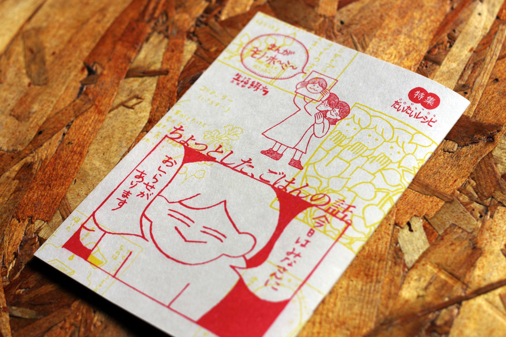
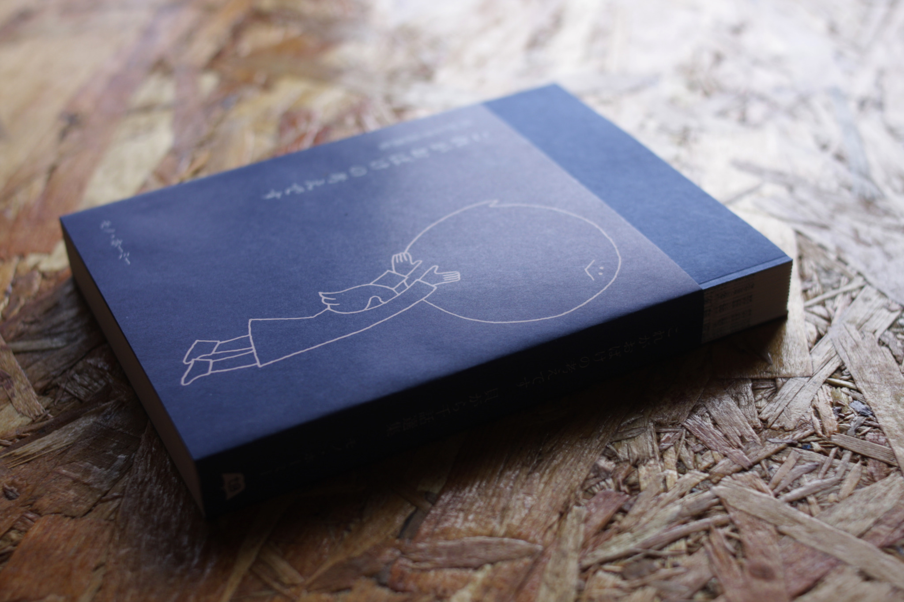
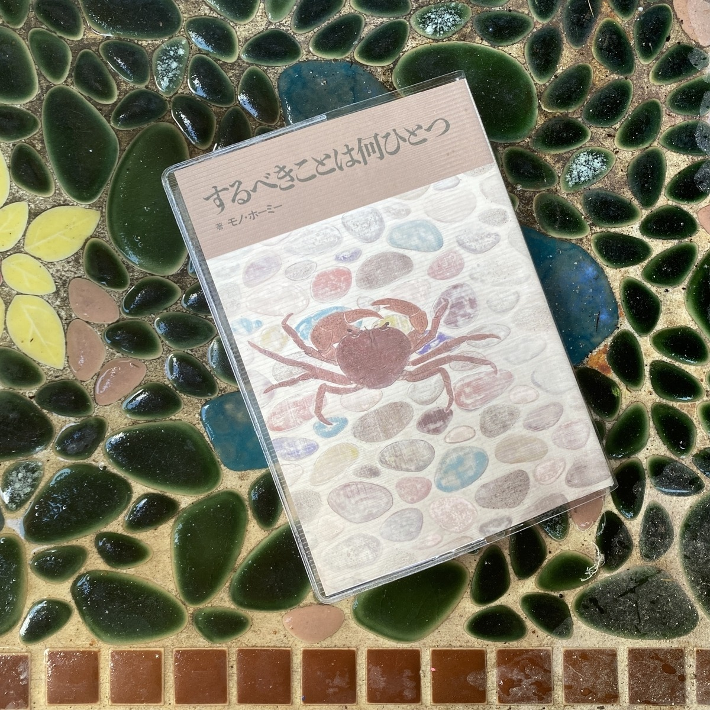

装画/挿画
2024年
- 『サイコドラマをはじめよう』（装画）著・増野 肇、増野 由美子 / デザイン・戸塚泰雄(nu) / 金剛出版 3月7日発売
2023年
- 『SNSの哲学 リアルとオンラインのあいだ』（装画・挿画）著・戸谷洋志 / 編集・藤本なほ子 / デザイン・矢萩多聞 / 創元社 4月12日発売
- 『遠きにありて、ウルは遅れるだろう』（装画）著・ぺ・スア / 翻訳・斎藤真理子 / デザイン・緒方修一 / 白水社 1月19日発売
2022年
- 『とりばけい歌集 不可視光線 -Invisible ray scattering-』（装画） 著・とりばけい / はたらきアリ出版 11月15日発売
- 『身体を彫る、世界を印す イレズミ・タトゥーの人類学』（装画） 編著・山本芳美、桑原牧子、津村文彦 / デザイン・コバヤシタケシ / 春風社 6月17日発売
- 『複雑性PTSDの理解と回復 子ども時代のトラウマを癒すコンパッションとセルフケア』（装画） 著・ アリエル・シュワルツ / 訳・野坂祐子 / デザイン・戸塚泰雄(nu) / 金剛出版 4月5日発売
2021年
- 『本の市の本』特集 わたしの本の届け方（装画・挿画・寄稿） / 「妙蓮寺 本の市」事務局 9月26日発売
- 『世界を貧困に導く ウォール街を超える悪魔』（装画） 著・ ニコラス・シャクソン / 訳・平田光美、平田完一郎 / デザイン・斉藤よしのぶ / ダイヤモンド社 11月2日発売
- 『文体の舵をとれ ル=グウィンの小説教室』（装画） 著・ アーシュラ・K・ル=グウィン / 訳・大久保ゆう / デザイン・折田烈(餅屋デザイン) / フィルムアート社 7月30日発売
- 『ガールズ・メディア・スタディーズ』（装画・線画のみ） 編著・田中東子 著・ 竹田恵子、上村陽子、中條千晴、中村香住、東園子、有國明弘、渡辺明日香、村上潔、梁・永山聡子 / 北樹出版 6月20日発売
- 『ソーシャルワーカー・心理師必携 対人援助職のためのアセスメント入門講義』（装画） 著・スーザン・ルーカス / 監訳・ 小林茂 / 訳・ 池田佳奈、久納明里、 佐藤愛子 / デザイン・戸塚泰雄(nu) / 金剛出版 2月16日発売
2020年
- 『《時間》のかたち』 著・伊藤徹 / デザイン・末吉亮(図工ファイブ) / 堀之内出版 9月14日発売
- 『神社で出逢う 私だけの守り神』（装画・挿画） 著・浜田浩太郎 / デザイン・井上篤(100mm design) / 祥伝社 4月1日発売
- 『のどがかわいた』（装画） 著・大阿久佳乃 / デザイン・櫻井久 / 岬書店 3月19日発売
2019年
- 『石母田正と戦後マルクス主義史学 アジア的生産様式論争を中心に』（装画） 述・原秀三郎 編・磯前順一、磯前礼子 / デザイン・櫻井久 / 臼井新太郎(臼井新太郎装釘室) / 株式会社三元社 5月10日発売
- 『デザインじゃない デザインのはなし』（挿画）/ デザイン・木村高典(たき工房) / TAKI PRODUCTS 6月20日発売
単著
2023年
- 『ちょっとした、ごはんの話。』（著作）/ 中岡祐介（三輪舎）／印刷・製本・発行：生活綴方出版部（株式会社石堂書店） 11月11日日発売

2023年11月11日、文学フリマ東京37にて新刊『ちょっとした、ごはんの話。』が生活綴方出版部より刊行されました。
これまで描いてきたごはんの漫画に、描き下ろしの四コマやイラストを加えたリソグラフ印刷の本です。普段ごはんの話やたべものに関するあれこれなど、だいたいでなんとなくのレシピもあります。楽しんで頂けたら嬉しいです！生活綴方出版：本書注文ページ
『これがおばけの考えです』（著作・絵）/ デザイン・井上麻那巳 / タバブックス 3月31日発売

夜、眠る前に読みたいお話が
「貝がら千話」第1夜から第500夜のなかから50話、収録されています。タバブックスさんのホームページにて「あなたの種、売ります」「パブリックディスクロージャー」「山のおばけ」の三篇を試し読みしていただけます。
タバブックス：本書紹介ページ
2021年
- 長湯文庫『するべきことは何ひとつ』（著作）/ 装画・木村直広 / デザイン・古本実加 / 出版社さりげなく 9月26日発売

長湯文庫は、表紙・本文用紙ともに撥水紙を使用したお風呂で読める文庫本のシリーズです。『するべきことは何ひとつ』には貝がら千話の①②③より、お風呂で読みたいお話33編が収録されています。出版社さりげなく：本書紹介ページ